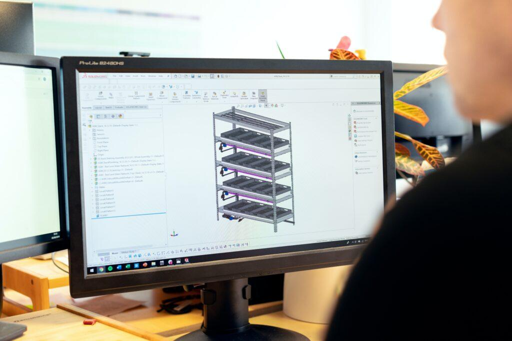

Como profesionales en el rubro del diseño, prototipado y manufactura, entendemos que el concepto de un proyecto es tan importante como su implementación en el entorno final de uso. Planificar, organizar y administrar recursos son nuestros pilares para cumplir con plazos y objetivos planteados; por eso es importante conocer y elegir el camino adecuado para llegar al mejor resultado. La segmentación de un proyecto facilita el proceso de diseño y desarrollo del producto, ya que se puede trabajar de manera más enfocada en todo momento, optimizando los recursos y minimizando los errores. Esto permite identificar soluciones específicas, lo que resulta en un producto final de mayor calidad y eficacia.

Brindamos servicios especializados de diseño y desarrollo de productos con un enfoque en la visualización digital y en la manufactura. Contamos con una trayectoria de más de 5 años en la industria y un servicio personalizado en cada proyecto.
Para llevar adelante cada proyecto es importante conocer y elegir la tecnología adecuada para llegar al mejor resultado. Como parte de un proceso de consante experimentación, desarrollamos un amplio conjunto de técnicas y equipos para brindar un servicio a medida.
Modelamos objetos 3D parametrizables desde cero (Solidworks, CADBuilder) o los reconstruímos digitalmente usando fotografías en alta resolución.
Creación de archivos multimedia con motores gráficos de última generación (Cycles, UE5, Vulkan) y aplicaciones de realidad extendida con modelos tridimensionales.
Materializamos ideas con tecnología FDM (impresión con filamento plástico), DLP (impresión con resinas), inyección plástica, resina colada y termoformado.
Exportamos modelos 3D a una amplia gama de plataformas (Mach 3 y 4, LinuxCNC, GRBL, etc.) para su posterior fabricación en madera y metal.